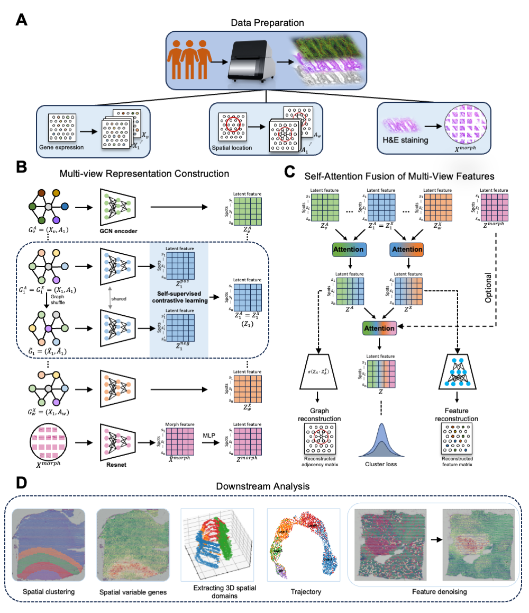

Welcome to MCGAE Tutorial

MCGAE is a novel deep computational framework designed for comprehensive analysis of spatial transcriptomics data across platforms, integrating morphological images. Given spatial multi-modal transcriptomics data, MCGAE commences by initially acquiring the original gene expression matrix alongside the adjacency matrix, which is computed based on spatial coordinates. The framework's multi-view construction is facilitated through a modular modelling approach, granting users the flexibility to select from a variety of enhancement methods, including but not limited to simple autoencoders, for the purpose of obtaining enhanced views of gene expression matrix \(X\). Furthermore, the construction of multiple views of adjacency matrix \(A\) is achievable by employing diverse similarity metrics, thereby enriching the data analysis spectrum by capturing a multitude of perspectives and relationships inherent within the spatial transcriptomics data.
In the ensuing phase, modality-specific spots representations are obtained through contrastive graph convolutional neural networks coupled with attention modules. Specifically, MCGAE keeps \(X\) fixed and uses it with different views of \(A\), where each pair \((X_1, A_j)\) is processed through a Graph Convolutional Network (GCN) to extract multi-view representations that are specifically pertinent to \(X_1\). These representations are then fused into a comprehensive embedding \(Z^X\) using an attention mechanism, which is utilized for the reconstruction of the original \(X_1\). Similarly, by keeping \(A_1\) constant and varying \(X_i\), MCGAE follows the same process to garner view-specific representations for \(A_1\), which are aggregated into \(Z^A\). The pair \((X_1, A_1)\) is designated as the base graph, encapsulating the original expression data. The refinement of their biological representations is further achieved through the adoption of self-supervised contrastive learning. In instances where morphological images are accessible, MCGAE leverages a pre-trained ResNet50 for the extraction of image features, resulting in the image embedding \(Z^{\text{morph}}\), thereby enhancing the model's capability in processing multimodal data.
During the terminal fusion phase, MCGAE employs an attention mechanism to combine \(Z^X\), \(Z^A\), and \(Z^{\text{morph}}\), creating the ultimate composite embedding \(Z\). This embedding is further refined through an unsupervised deep iterative clustering strategy to enhance its compactness, which is then applied to downstream analytical tasks such as spatial domain identification, data denoising, SVGs identification, trajectory inference, and extraction of 3D spatial domain. By integrating multi-view contrastive graph neural networks, attention mechanisms, and deep iterative clustering, MCGAE achieves precise and customized embeddings, significantly enhancing the reconstruction of spatial structures and the representation of gene expression patterns. This approach adeptly handles the complexities of spatial transcriptomics, providing essential insights into tissue heterogeneity and proving to be of immense value in advanced biomedical research.